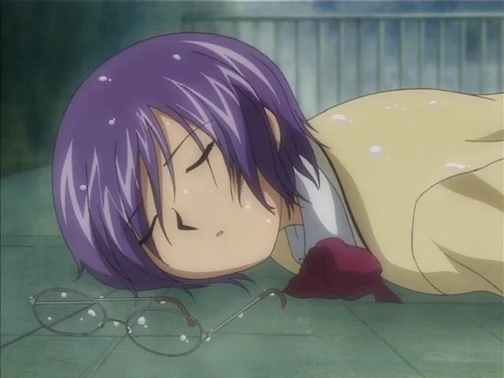

.png)

En el primer capítulo se nos presenta la serie dejando unas claras bases para comprender el resto de la historia, así que el capítulo no contiene todo lo que podemos esperar de el resto y no es de los capítulos más entretenidos de re-ver.
El capítulo trata acerca de la relación en el presente de Nanaka Kirisato y Ninji Nagihara. A sus 17 años no llevan una relación muy satisfactoria, púes vemos como Ninji se mete en peleas y no se esfuerza con sus estudios, mientras tanto, Nanaka insiste a Ninji que debería ser más maduro, irritándole hasta el punto de decirle que no desea verla nunca más, que es lo que termina provocando el accidente que provoca a Nanaka el estado mental de amnesia que veremos en el resto de la serie, haciendola pensar que tiene 6 años y olvidando todo lo que ha pasado los últimos 11 años, simplemente pensando que un hechizo mágico ha hecho que Ninji y ella misma han crecido físicamente. Este evento preocupa tanto a Ninji como al padre de Nanaka, que es el único familiar de Nanaka que llegamos a conocer, ya que su madre falleció a los 6 años de Nanaka.
Ninji se compromete a cuidar de Nanaka al darse cuenta de que Nanaka ahora vive en un mundo distorsionado como una niña pequeña, pero se lo ocultan al resto de personas a su alrededor.
